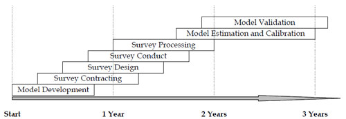

Model Validation and Reasonableness Checking/Temporal And Sensitivity
# Temporal Validation and Sensitivity Testing
Temporal validations of travel models have been performed by many agencies as a matter of practice. Quite often, an existing travel model is applied for an updated base year to show that the model is still "valid." For example, a regional model may have been most recently estimated using data from a household travel survey collected in 1997. The model may have been validated against independent data collected for that purpose for the original base year, 1997. The agency maintaining the model might then "validate" the model against traffic and transit ridership data collected, say, every five years until a new household survey is collected. Thus, model system "validations" might exist for 2002 and 2007 with the next major data collection and model estimation scheduled for 2012. The 2002 and 2007 validations might include adjustments to the models to better reproduce observed traffic and transit ridership.
Temporal validations such as the aforementioned are important for systemwide model validations, particularly if sufficient time or transportation system changes exist between the years selected for the validation. They may be necessary for maintaining credibility of the travel models with local officials or may be required by an MPO or state DOT. The periodic systemwide validations are often crucial for demonstrating the need to collect new travel survey data and estimate updated travel models.
While these periodic checks to ensure that established travel models continue to reasonably reproduce observed traffic and transit ridership are important, they represent a special case of the temporal validation and sensitivity tests described in this chapter. The primary focus of this chapter is an expanded concept of temporal validation and sensitivity testing that can be performed when travel models are estimated and calibrated. The ideas described in this chapter are generally applicable for both trip-based and activity-based travel models.
Several definitions guide the concepts described in this chapter:
- Forecast is any application of the travel model for any year after the model calibration year;
- Backcast is any application of the model for a year prior to the calibration year;
- Temporal validation tests are comparisons of model forecasts or backcasts against observed travel data; and
- Sensitivity tests are evaluations of model forecasts for years or alternatives for which observed data do not exist.
Thus, if a model was calibrated using 1997 data, applications of the model for 2002 and 2007 would represent forecasts even though those years are now history. Comparisons of the forecasts for 2002 or 2007 against observed data such as traffic counts would be temporal validation tests. Likewise, if the model had been calibrated using 2007 data, applications of that model using the 1997 and 2002 data would represent backcasts, and comparisons to observed 1997 or 2002 data would also be temporal validation tests.
# Temporal Validation
# Timeline for Calibration and Temporal Validation
Temporal validations should be performed when travel models are developed. Figure 10.1 shows an example timeline for a model development process including the collection of travel survey data. As shown in Figure 10.1, the time from the initiation of model development to model validation can easily be three years. As recommended in Validation Plan, the development of a validation plan should take place in conjunction with the development of a model development plan. Based on the model validation plan, validation data would ideally be collected in parallel with the survey. However, with the short timeframe for data collection and model development shown in Figure 10.1, a backcast would be the most likely procedure for temporal validation.
There are, of course, many variations to the example shown in Figure 10.1 that may compress or expand the timeline. More complicated data collection schemes, resource constraints, or extension of the model estimation and calibration might extend the timeline to, say, five or more years. In such a case, it might be possible to assemble some validation data toward the end of the timeline that would allow a temporal validation using a forecast to, say, the fifth or sixth year after the project initiation.
A variation of the backcast/forecast option for model validation has been used by the Denver Regional Council of Governments (DRCOG). DRCOG performed several travel surveys between 1997 and 1999 and refreshed the various components of their trip-based travel models between 2000 and 2004. Development of an activity-based model using the 1997 household survey data was initiated in 2006. Since almost 10 years had elapsed between the initial data collection and the activity-based model development, DRCOG estimated the models using the 1997 data, calibrated the models to match 2005 conditions, and backcast to 1997 for temporal validation.

# Temporal Validation Data
Temporal validation tests are, of course, dependent upon data availability. Many temporal validations focus on matching traffic counts and transit boardings due to the general availability of those data. The validation tests are limited to those used for trip assignment validation or overall model system validation. While such validations are important and should be performed, they do not validate the various model components over time. Validating other model components require additional data to supplement traffic count and transit boarding data.
# Sources of Backcast Validation Data
Several primary sources of backcast data, other than historical traffic counts and transit boarding counts, may exist for a region. The sources include previous travel survey data, census data, historical travel model applications (especially from previous validations), and written reports.
# Previous Travel Survey Data
If data from a previous travel survey are well documented and archived, many of the model validation tests described in this manual may be possible when models are updated (based on a new data collection effort). If network and socioeconomic data used for model development in conjunction with the previous travel survey are also archived, it might be possible to consider a full range of temporal model validation tests.
Since modeling procedures and model applications software change over time, the existence of archived networks and socioeconomic data does not guarantee that a backcast can be performed. Network data and network processing may be particularly difficult. It might be less costly and time consuming to adapt the network for the existing model calibration to the backcast year. Alternatively, if network impedance matrices are available for the backcast year, it may be possible to use the impedance data to validate travel model components such as trip distribution and mode choice.
# Census Data
Census journey to work data from the 1990 and 2000 can provide valuable backcast validation data, especially for home-based work trip distribution or primary work location choice. Past Census data can also be valuable for temporal validation of population synthesis.
The Census Journey to Work was migrated from the decennial Census (long form) to the American Community Survey. Information about commuting patterns (opens new window) for 2006-2010 have been made available on the U.S. Census website.
# Historical Travel Model Applications
If travel survey data for a backcast year are unavailable, useful backcast validation data can be summarized from previous model applications, especially applications performed in support of previous model validation efforts. As noted for previous travel survey data, it may be difficult to process network data using existing modeling software. Thus, it might be necessary to restore previous releases of the modeling software.
# Written Reports
Written travel model validation or model application reports for backcast years might provide summary tables and data necessary for a backcast model validation. It might be necessary to adjust existing year networks and socioeconomic data to reflect the backcast year.
# Sources of Forecast Validation Data
As mentioned previously, a forecast validation describes an application of the travel model for any year after the model calibration year. A few locations may have results from a new travel survey available but alternative sources such as the census or the American Community Survey (ACS) are more likely sources for validation data.
# Travel Survey Data
In some cases, new travel survey data may be available for model validation. While it is likely that the new model validation data would be used for an update of the travel model, that effort may be scheduled for a future time. As an example, a version of the Puget Sound Regional Council (PSRC) regional travel model was estimated in 2000 based on 1999 household survey data. The primary validation for that model was for the year 2000. PSRC collected a new household travel survey (more than 4,000 households) in 2006 to support their development of an activity-based model. However, PSRC also used the 2006 data to validate the model parameters estimated in the 2000.
# American Community Survey
The initiation of the ACS provides the opportunity to perform forecast temporal validations. The decennial Census of Population and Housing collects data about the number of people residing in the United States and their relationship within a household, age, race, Hispanic origin (ethnicity), and sex. It also collects information about the number, occupancy status, and tenure (ownership status) of the nation’s housing units. In the censuses of 1980, 1990, and 2000, information about topics such as income, education, employment status, disability status, housing value, housing costs, and number of bedrooms were asked on the "long form." Since there is no long form associated with the censuses starting in 2010, data on these topics will come from the ACS.
Instead of collecting data from about one in every six households once every 10 years, as with the decennial census long form, the ACS samples about one in every 40 addresses every year, or 250,000 addresses every month. This allows the Census Bureau to produce data every year rather than every decade. For areas with large populations (65,000 or more), survey estimates are based on 12 months of ACS data. For all areas with populations of 20,000 or more, the survey estimates are based on three years of ACS data. The Census Bureau is planning to produce estimates for all areas, down to the census tract and block group levels, based on five years of ACS data.
The following are some of the data that may be useful for travel model validation available in the ACS:
- Demographic Characteristics:
- Age;
- Sex; and
- Relationship to householder.
- Economic Characteristics:
- Income;
- Labor force status;
- Industry, occupation, and class of worker;
- Place of work and journey to work;
- Work status last year; and
- Vehicles available.
- Financial Characteristics:
- Tenure (owner/renter);
- Housing value;
- Rent; and
- Selected monthly owner costs.
- Journey-to-Work Characteristics:
- Location of most frequent workplace last week;
- Mode of travel to work usually used last week;
- Number of people in vehicle if auto, truck, or van used to get to work;
- Normal departure time for work last week; and
- Normal home-to-work journey time last week in minutes.
# Temporal Validation Tests
Temporal validation tests will, of course, depend on the validation data available for the backcast or forecast year. While it may not be possible to test each of the model components for the backcast or forecast year, if the data are available, model component validation tests should be performed in addition to an overall system test comparing modeled to observed traffic counts and transit boardings. The model component tests can support the results of overall system tests. For example, if a reasonable match between modeled and observed trip generation rates for a backcast year can shown in addition to a reasonable match between modeled and observed traffic volumes, a "better" temporal validation can be claimed. Such results should provide more confidence in travel forecasts produced using the model.
Results from temporal validation tests of model components based on survey data from two points in time are not likely to be as good as those for a typical model validation. The differences may be caused by differences in survey or sampling methods, random error associated with surveys, and changes in travel behavior over time (which the model may or may not be sensitive to).
# Sensitivity Testing
Temporal validations such as forecasting or backcasting are important for systemwide model validations. However, if there are limited population, employment, land use, or transportation system changes between the calibration and validation years, the temporal validation will provide little information regarding the sensitivity of the model.
Sensitivity testing can provide important information for model assessment. Sensitivity tests are not designed to tell whether the travel model is "correct" but, rather, to provide information about the overall behavior of the model. Sensitivity testing will help reduce unpleasant "surprises" that can occur when a forecast for a future year or an alternative does not produce expected results. A well structured sensitivity testing program provides travel modelers the opportunity to focus on the big picture of determining the overall reasonableness of the model in preparation for producing forecasts for specific studies.
Sensitivity tests for trip-based models should consider at least two major types of changes: land use changes and system changes. For activity-based models, analyzing the impact of a major policy change should also be performed. Simple examples would be changes in forecasts over time (e.g., 2005 to 2030), across alternatives (e.g., a corridor with and without a major new transit guideway project in 2030), and across policies (e.g., with and without peak-period congestion pricing charges in a Central Business District).
Since the sensitivity tests will be producing forecasts for alternatives that do not currently exist, it is impossible to tell what results are correct. Several options for determining the reasonableness of the resulting forecasts are outlined below:
- Establish expected outcomes via a panel of experts – This approach can be used for any sensitivity test. A panel of transportation planners and model users can be established. The existing conditions and changes being tested with the travel model should be described to the panel. The panel would then be asked to develop "forecasts" of the expected results based on their best collective judgment. The forecasts should be developed with as much specificity as possible. After forecasts are made with the model, the results should be summarized and compared to those from the expert panel. The results should be summarized and explained, especially for cases where the forecast results from the model differed from the results expected by the panel.
- Analyze the components of change for the results – This analysis approach is based on a detailed comparison of the forecast results for the alternative being tested to the base case.
- Compare to an existing forecast for the same alternative – Most regions developing new travel models are refreshing or replacing existing travel models. It is likely that a future year forecast exists for the current Regional Transportation Plan (RTP) for the region. Rerunning the existing RTP using the new travel model will demonstrate the sensitivity of the travel model to long-term population, employment, and transportation network changes. In addition, since the component results from the existing travel model for the RTP should be available, the differences in the sensitivity of the updated travel model could be compared and contrasted to the previous model.